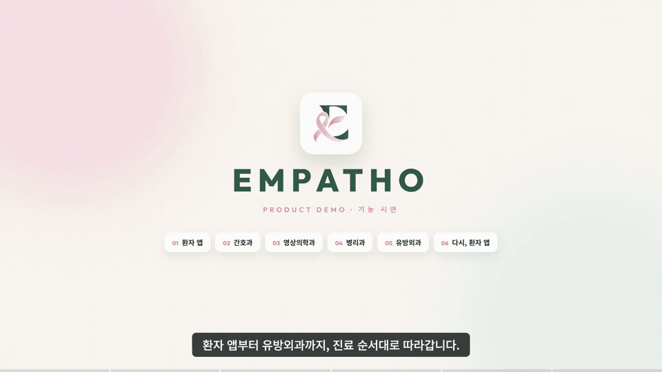
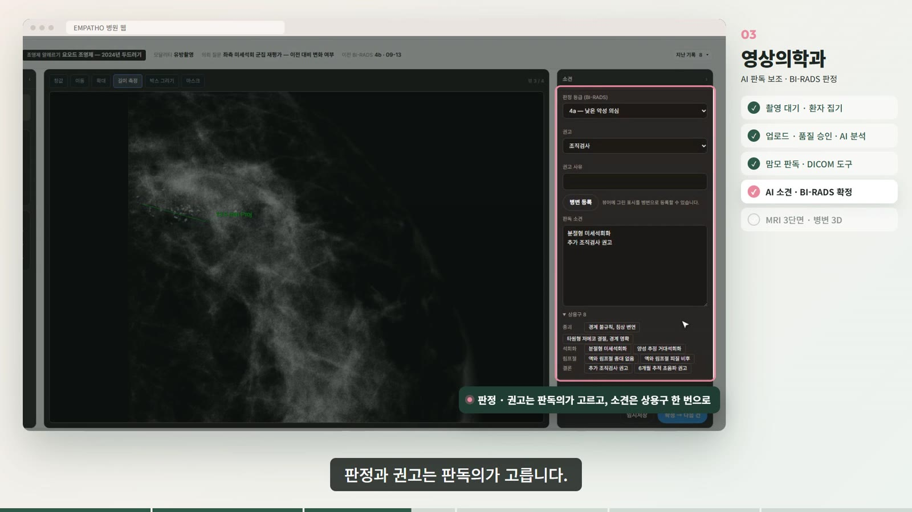
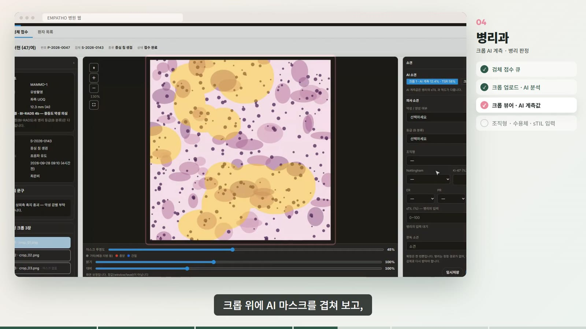
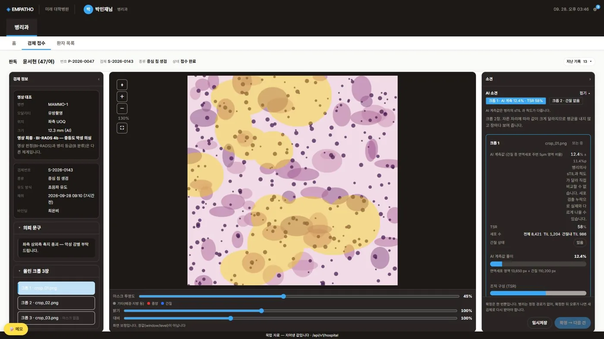
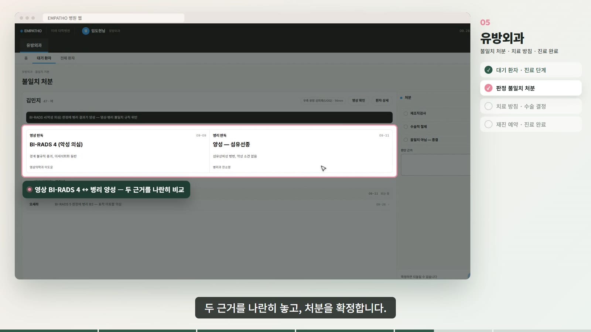

의료 AI · 최종 프로젝트
EMPATHO
과별로 흩어진 영상·병리·진료 기록을 병변 단위로 연결하고, 의료진이 AI의 근거와 신뢰도를 확인할 수 있도록 설계한 유방암 검진 지원 서비스(CDSS, 임상 의사결정 지원 시스템)입니다.

01해결하려던 문제
유방암 검진 기록은 영상의학과, 병리과, 유방외과에 나뉘어 있어 같은 병변의 검사 흐름을 한 번에 확인하기 어려웠습니다. 여기에 신뢰도가 낮은 AI 결과가 정상 판정처럼 보이지 않도록, 기록 연결과 판단 보류 기준을 함께 설계했습니다.
| 원칙 | 화면에서는 |
|---|---|
| 결과와 근거를 함께 표시 | 병변 마스크 · 판정 서술어 · 지표 카드 |
| 신뢰도가 낮으면 판단 보류 | 등급 대신 「판단 보류」를 표시하고, 판독의가 먼저 판정 |
| 영상·검체·병리 결과를 병변 ID로 연결 | 영상 소견, 검체, 병리 결과를 같은 병변 아래에 묶음 |
| 환자 결과는 대면 설명 후 공개 | 환자 리포트는 대면 설명이 끝난 뒤 열람 가능 |
02담당 업무
기획 — 주요 의사결정 27건과 보완 사항 8건을 문서화하고 개발 범위를 관리했습니다.
구현 — 간호·병리 화면과 로그인 기능, 일부 API와 서비스 진입 구조를 구현했습니다.
| 기여 범위 | 내용 |
|---|---|
| 문서 | 개인 문제정의서 · 결정사항 문서(결정 27건 · 보완 8건) · 발표 피드백 정리 · 25분 발표 대본 |
| 커밋 | 화면 저장소 103개(팀 내 최다) · 서버 저장소 70개 |
| 서비스 | Go 기반 파일 게이트웨이 · LLM 프록시 · 알림 서비스 초기 버전, nginx 단일 진입점 |
| 영상 | 시연 영상 제작 |
03주요 기획 결정
① 영상유도 조직검사를 고려해 검체 연결 권한 확대
- 문제
- 팀은 검체를 병변에 연결하는 권한을 유방외과와 간호과에만 주기로 합의했습니다. 그런데 이 규칙대로라면 영상의학과가 시행하는 영상유도 조직검사는 병리 접수 단계로 넘어가지 못합니다.
- 선택지
- ① 세 부서 모두 허용 ② 시술한 사람 + 간호과
- 결정
- ①을 택했습니다. 기존 합의를 가장 적게 바꾸면서 조직검사 접수가 막히지 않는 방법이었습니다.
- 결과
- 권한표와 에러코드에 반영했고, 발표 자료를 고칠 때 근거로 썼습니다.
② 개발 범위에서 제외할 항목을 먼저 기록
- 문제
- 시연용 프로토타입이었지만 재시도·감사 배치·결제 같은 운영 항목까지 논의하면서 일정이 밀리기 시작했습니다.
- 기준
- 빠졌을 때 시연 경로가 막히는지, 발표에서 주장하는 내용이 성립하지 않는지를 기준으로 삼았습니다.
- 결정
- 모델 관리는 설정 파일로 대신하고, 결제는 버튼까지만 만들었습니다. 1차 판정 잠금 · 판단 보류 · 필수 연결처럼 나중에 추가하면 과거 기록을 복원할 수 없는 기능은 이번 범위에 넣었습니다.


③ BI-RADS 0을 추가 촬영 상태로 분리
- 발견
- 공개 데이터를 보니 판정 0의 상당수는 병변이 가려져 보이지 않는 경우였습니다. 악성을 의심한다는 뜻이 아니라 추가 촬영이 필요하다는 뜻입니다.
- 결정
- 등급에 섞지 않고 「추가 촬영」 칸을 따로 두었습니다.
- 결과
- 추가 촬영만 필요한 환자가 조직검사 경로로 잘못 넘어가지 않습니다.

추가 결정 보기 (2건)
④ 간호과의 실제 접수 업무를 권한과 화면에 반영
- 관찰
- 간호과가 실제로는 원무 접수까지 맡고 있었고, 같은 환자가 같은 날 두 번 예약되거나 노쇼 오더가 쌓이는 일이 생겼습니다.
- 결정
- 간호과에 원무 권한을 합치고 중복 예약을 막았습니다. 예약 환자를 접수할 때는 기존 오더를 이어서 쓰도록 했습니다.

⑤ 기능 나열을 줄이고 해결한 문제 중심으로 발표 재구성
- 문제
- 35장 중 15장이 화면 넘기기였고, "등급을 숨긴다"는 슬라이드에 등급이 보이는 모순도 있었습니다.
- 결정
- 화면 슬라이드를 9장으로 줄이고, 슬라이드 제목을 기능명에서 해결한 문제로 바꿨습니다. 모델 성능에 관한 주장과 설계에 관한 주장을 나눴고, 「기존 경로가 끊기는 지점」 슬라이드를 추가했습니다.
⑥ 병리 판독문과 화면 수치의 불일치 해결
- 문제
- 화면에는 종양 0%로 표시됐지만 판독문에는 종양이 있는 것처럼 작성됐습니다. 두 결과가 서로 다른 마스크를 사용했고, 판독문용 이미지에는 종양 영역 5.8%가 포함돼 있었습니다.
- 결정
- 한쪽 값을 보정하지 않고, 판독문과 화면 수치가 같은
consensus_mask함수의 결과를 사용하도록 계산 경로를 통합했습니다. 요청한 모델과 실제 실행된 모델이 다르면 결과를 내지 않도록 처리했습니다. - 결과
- 회귀 테스트 7개를 추가했습니다. 병리 판독 상세 보기 →
04팀의 결과
| 영역 | 지표 |
|---|---|
| 초음파 | 외부 검증셋 Dice 0.788 · 등급 ±1 이내 0.949 |
| MRI | 종양 Dice 0.717 |
| 인프라 | 영상 모델 3종이 백본 하나를 공유해 GPU 메모리 약 46% 절감 |
| 규모 | 공개 API 약 100개 · 테스트 265개 · 근거 논문 38편 |
모델 학습과 성능 수치는 팀원들의 작업입니다. 같은 환자의 영상·병리 짝 데이터가 공개돼 있지 않아 모달리티마다 다른 코호트를 썼고, 이 한계를 화면과 발표에 먼저 밝혔습니다. 모든 환자 데이터는 합성 데이터입니다.
05회고
이 프로젝트에서 가장 크게 배운 것은 팀의 합의를 실행 가능한 문서로 정리하는 방법이었습니다. 결정마다 근거와 영향을 받는 문서를 함께 기록하자 권한표, 에러코드, 발표 자료를 수정할 때 같은 논의를 반복하지 않아도 됐습니다. 이후에는 기능 목록뿐 아니라 결정의 배경과 제외한 범위까지 남기는 것을 기획 업무의 일부로 삼고 있습니다.
코드와 전체 README → github.com/spgummo0905-alt/empatho-showcase